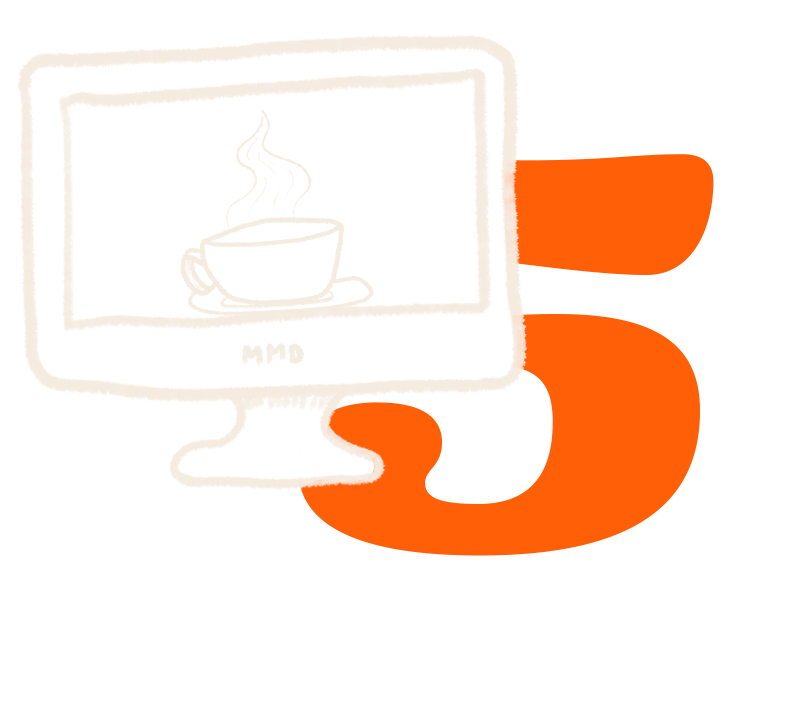
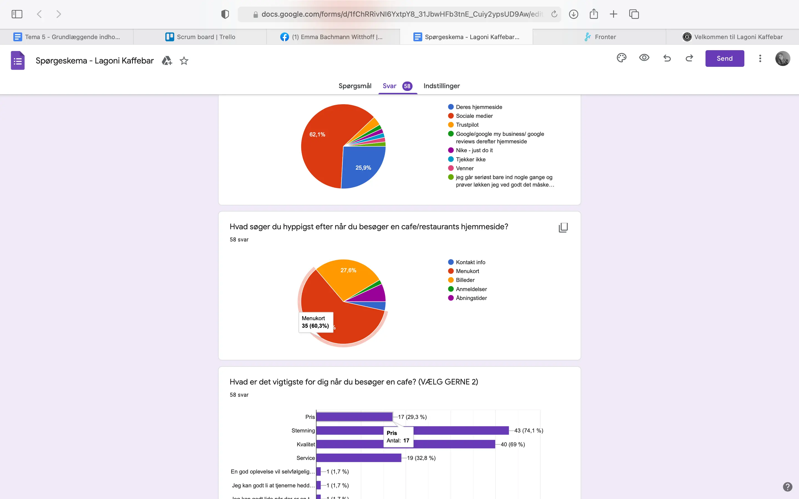
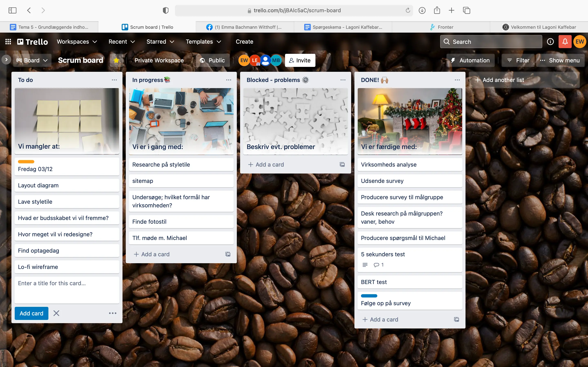
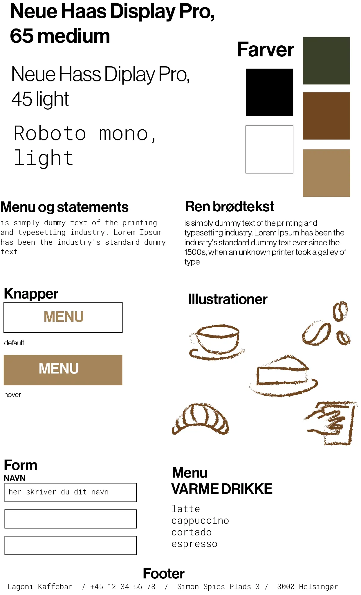
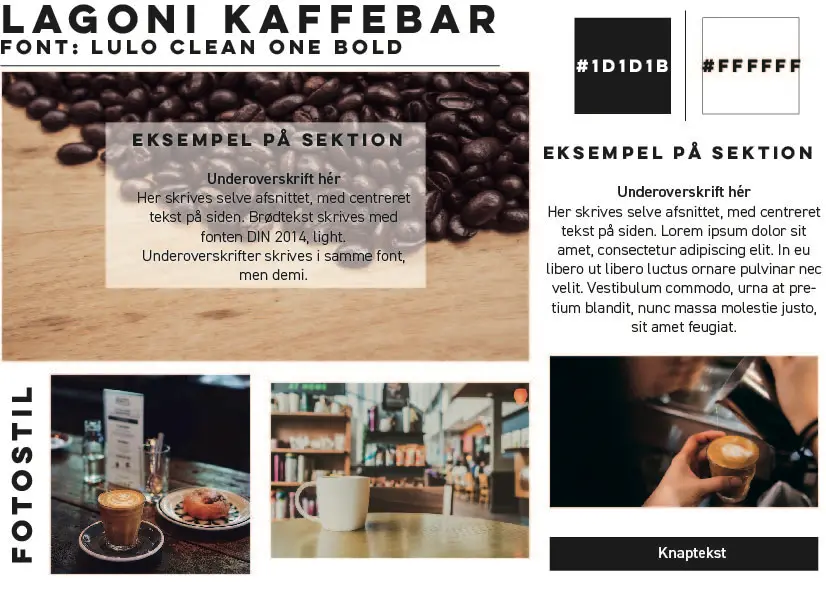
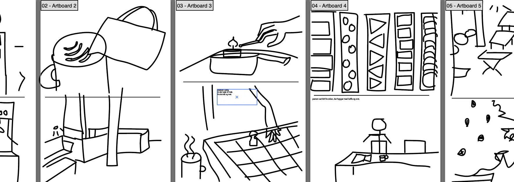

Tema 5 - grundlæggende indhold
Tema 5 havde fokus på indholdsproduktion.
Første uge var en slags øvelse, med introduktion til klipning, og
til at bruge Premiere Pro. Desuden en øvelse i, hvordan man kan
fortælle en historie, ud fra hvordan der klippes. Jeg lærte om
b-rolls, og hvor nyttige de er, til at skjule at der klippes
mellem skud. Denne taktik benyttede jeg også senere, da jeg skulle
klippe en video til passionsprojektet, hvilket gav et godt udtryk.
Vi blev introduceret til grundlæggende regler om ophavsret,
hvilket vi skrev os bag øret i det senere arbejde, når der skulle
udvælges musik eller fotos.
Til passionsprojektet fik jeg igen afprøvet interviewguide. Det er en
god måde, at sikre sig at spørgsmålene skrider frem, i tilpas
hastighed.
Dog ville jeg ønske, at vi havde stillet flere opfølgende spørgsmål,
og holdt spørgerammen lidt mere snæver. I tema 3 var jeg bedre til at
følge op på spørgsmål, men begge steder fungerede den aktive lytning
godt, til at skabe trygge rammer for interviewet.
Vi lærte at bruge mikrofoner, og kom nærmere ind på hvordan audition
kan bruges, til at fjerne uønsket støj. Vi har før brugt audition i
animationstemaet, så man kendte det lidt i forvejen. I dette
indledende projekt, fik man øvet hvor vigtig planlægning kan være –
det blev vi heldigvis bedre til.

Det helt store projekt; redesignet, krævede at vi analyserede en
virksomheds organisation. Hér lærte jeg, hvordan man kan kombinere
interview med direktør/ejer, med desk-research om målgruppe, og herved
komme frem til en konkret problemstilling.
Vi foretog 5 sekunders tests på sitet, og indså at denne ikke var
indbydende nok. Hjemmesiden skulle ikke henvende sig meget til den
yngre målgruppe, på trods af at disse var de største forbrugere af
virksomhedens faciliteter.
Undersøgelserne viste os nemlig, at det hovedsageligt er den ældre
målgruppe der opsøger informationer via web, fremfor f.eks. Instagram.

Vi strukturerede vores arbejde fint, og benyttede SCRUM hver dag i
processen. Hver morgen fik vi overblik over, hvad vi skulle nå i dag –
og når arbejdsdagen var ovre, fik vi nogle gange lektier for, og
opsummerede hvad vi havde nået i løbet af dagen.
Jeg var særdeles tilfreds med den struktur dette gav. Det vil jeg også
benytte mig af i tema 6.
SCRUM blev også brugt til at planlægge de mange processer der ligger
forud, for at designe et site. Denne proces havde vi efterhånden været
igennem nogle gange, så det føltes trygt.
Vi kortlagde hvem der skulle lave sitemaps, layoutdiagram, wireframes
og hifi prototype. Jeg stod f.eks.for udarbejdelsen af styletile.

BERT var en nyttig test. Denne undersøgte, hvilken følelse den
nuværende og den redesignede hjemmeside gav brugeren. Det gav godt
indblik, og viste os, at vi havde produceret en langt mere
brugervenlig hjemmeside.
Undervejs benyttede vi også ekspertesten, til at fastlægge nogle
problematikker, og hvordan disse kunne løses. Igen en god mulighed,
for at få et overblik.
Det var nyttigt, at man tidligere havde arbejdet med styletiles og
moodboards – så da disse skulle produceres, var det langt mere en
hjælp at have dem, end en byrde at lave dem.
I dette projekt blev JavaScript nødvendigt til at lave en burgermenu.
Denne stod jeg for, og det lykkedes mig forholdsvis godt, at forstå
JavaScript-delen. Det forbløffede mig, at det sværeste faktisk lå i
CSS’en. Da denne var færdig, push’ede jeg til vores repository på
Github, så min gruppe kunne pull’e menuen, ned i deres vscode.
Jeg påtog mig ligeledes rollen, at oprette en kontaktform. Her var jeg
meget opmærksom på gestaltlovene om nærhed og lukkethed, for at gøre
det mest muligt overskueligt. Git var et nyttigt værktøj, som vi
brugte til at dele ændringer live, med hinanden.

Videoproduktionen var et stort fokus. Jeg havde med i baggagen fra
tema 1, at jeg ønskede at bruge mere energi på storyboard, og generel
planlægning end sidst.
Vi lavede lister med den teknologi der ville egne sig bedst. Vi endte
med et slags steady-cam, som gav lidt samme følelse som en drone. Vi
planlagde fotos hjemmefra, og tog disse med et DSLR-kamera.
Vi ønskede at skabe en video, der fungerede godt på web, men også på
f.eks. Instagram. Vi satte videoen i HTML vha. videotagget. Dertil
brugte vi loop, autoplay og muted, til at denne kørte af sig
selv.
Det lykkedes heldigvis at planlægge hjemmefra, hvilket hjalp os til at
holde fokus på det vigtigste, og få fortalt den ønskede historie, på
optagedagen.
